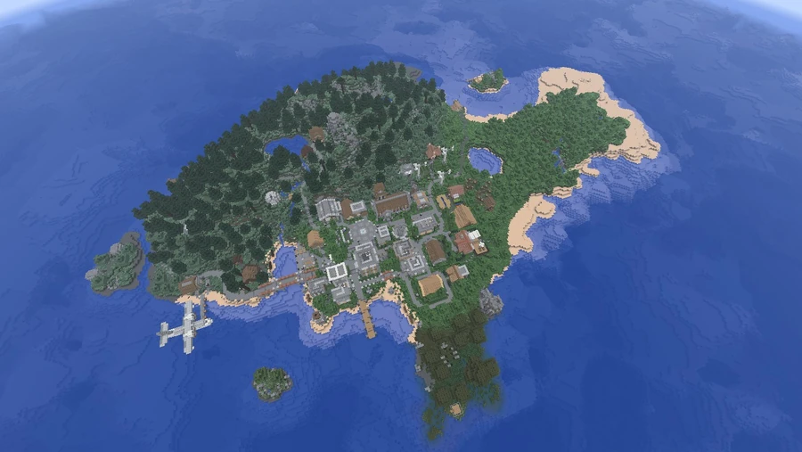

Fractal Island
The arrival island and starting point for v11, with a choice of game mode and access to different parts of the continent and to Brolapagos.
The v11 starting point
Fractal Island serves as the central arrival island for v11. The spawn point is placed at 1217, 69, 810. Players can choose Survival or Creative there; community guidance recommends beginning in Survival. The island contains teleport access to major places on the continent and to Brolapagos.



The agency and guide
Warp Recommendations is a book by the tourist agency BroTours Publishings™, available at the agency beside spawn. A copy is recorded at 1199, 69, 798. Its recommendations offer eight starting points for discovering Broville, using the island's own buildings and paths as landmarks.
Eight routes into Broville
| Destination | How to find the access point on the island |
|---|---|
| BroCORP | To the north, in the largest and tallest office building. |
| Baywalk Beach | In a house near the pier, to the north. |
| International Airport | Cross the bridge east of spawn and board the plane. |
| Alpine Village | To the south, follow the winding road uphill toward the mountain. |
| Breno | In a bar to the south. |
| Canals Cathedral | In the church beside the road, to the west. |
| River Valley Farmland | In a farmhouse farther west. |
| Brolapagos | On a small tropical island to the southwest. |
The BroCORP access point provides an arrival in the office district. The airport route allows onward travel by metro, while Alpine Village, Breno, the Canals cathedral and the farmland provide other entry points into the world. Directions are given from the initial position on Fractal, rather than from the mainland destinations.
See also
Sources and references
- v11.4.4 maps, signs, books and items World records
- Fractal Island · Broville Wiki Community archive
- Warp Recommendations · BroTours Publishings, copy at 1199, 69, 798 World book
Text adapted and expanded from Warp Recommendations (contributors and history, revision 4920); Fractal Island (contributors and history, revision 5019). Adapted text is available under CC BY-SA 3.0.